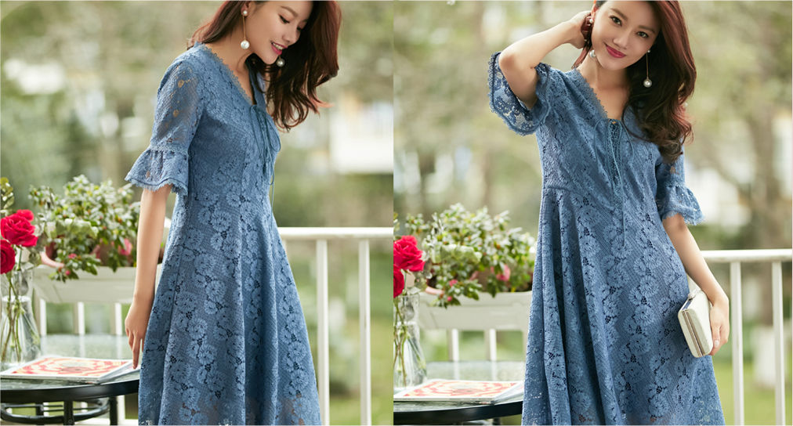

春日里的连衣裙，仙气又撩人
薄纱，就像少女时代的秘密一样，欲说还休，一旦被笼罩，便如同落入了满是迷雾的仙境，走动之间，轻柔的裙摆随风摇曳，曼妙身姿若隐若现。


花朵是“仙女裙”的又一经典元素，集合了时下流行的芭蕾粉、山茶白之后，成片的花朵不仅没有拥挤的视觉感，反而错落有致，显得尤为清新。同时，玖姿设计师又别出心裁地将花朵攀岩生长的过程展示于裙身之上，连结的花叶加深了相互羁绊，能给穿着者带来更为跳脱生动的体验感。

蕾丝又何尝不是“仙女 的标配呢，得益于面料质感及立体剪裁，连衣裙兼具了柔软与挺括，而喇叭袖口的设计则体现了现代宫廷之感，既古典又浪漫。把蕾丝作为点级亦是“仙女裙”的惯用手法，雪坊衬衫式的上身设计具有较强的职业感，而蓄丝绣花裙摆的配台，提升了整体的精致度，从而突出了女性魅力。
